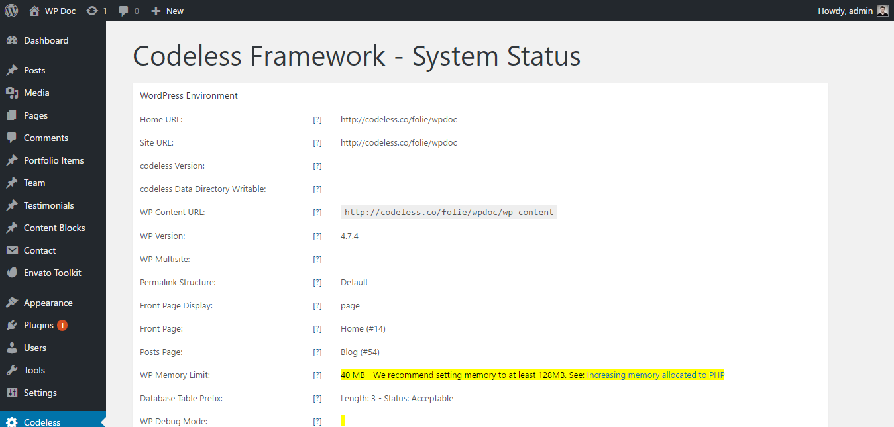
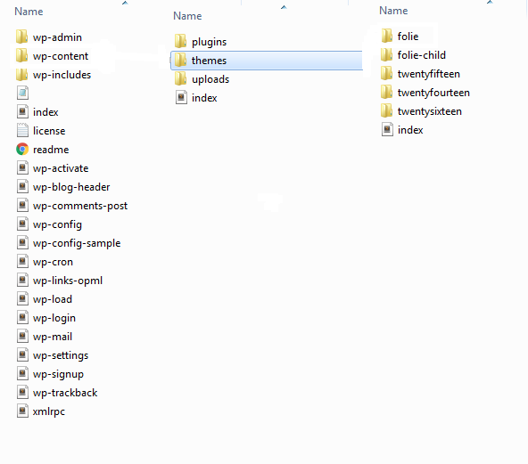
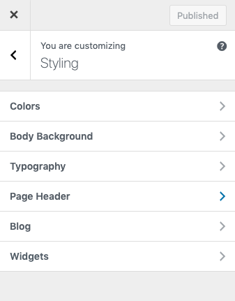
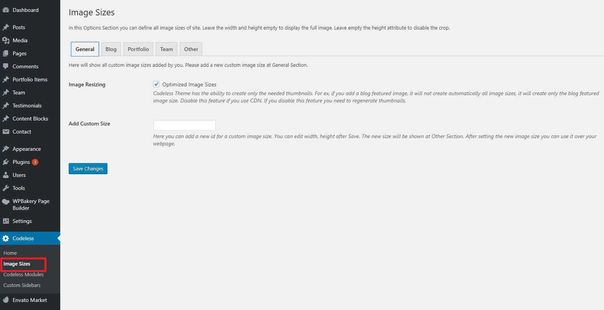
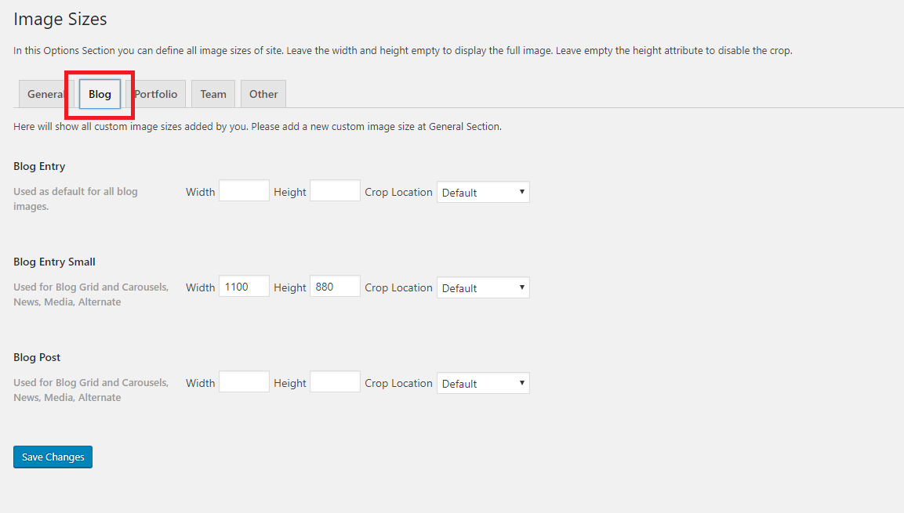
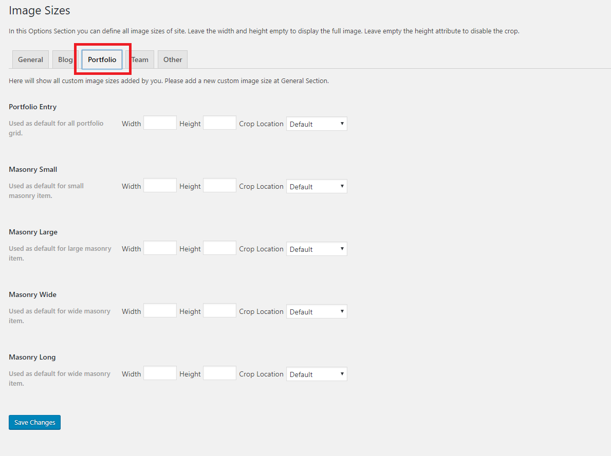
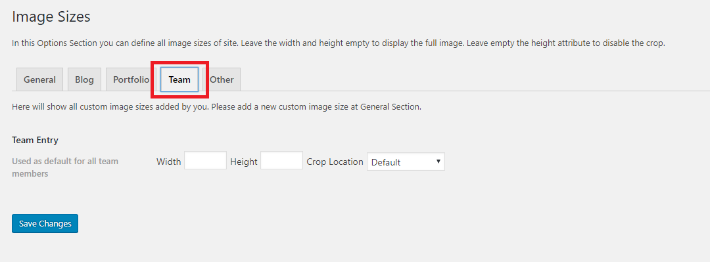
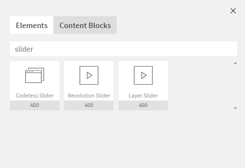

Documentation
Welcome to Remake Documentation. Here you will find the all the useful detailed instructions to use Remake theme.
Welcome to Remake Documentation. Here you will find the all the useful detailed instructions to use Remake theme.
Hey there! We are very pleased that you have chosen Remake for your website, you will not be disappointed! Before you get started, please be sure to always search our Documentation and Knowledge base, and also watch our Video Tutorials. We provide you with all the details you need to use Remake. It can only be used with WordPress and we assume that you already have WordPress installed and ready to go. If you do not, please follow this link to see our section on WordPress to help you get started.
Thanks, and enjoy!
Firstly, lets check this introduction video on how to install and basic usage instruction on Remake theme
To install this theme you must have a working version of WordPress already installed. If you need help installing WordPress, follow the instructions in WordPress Codex. Below are all the useful links for WordPress information.
To use Remake, please make sure you are running WordPress 4.7 or higher, PHP 5.6 or higher, and MySQL 5.6 or higher (for legacy environments also PHP versions 5.3.x will work but it is recommended to be on at least PHP 5.6 and preferably PHP 7.0. WordPress recommends PHP 7). We have tested it with Mac, Windows and Linux. Below is a list of items you should ensure your host can comply with.
To check your system status please go to Codeless -> System Status on the manin WP menu.
Many issues that you may run into such as; white screen, demo content fails when importing and other similar issues are all related to low PHP configuration limits. The solution is to increase the PHP limits. You can do this on your own, or contact your web host and ask them to increase those limits to a minimum as follows:
When you purchase our theme from ThemeForest, you can download the Remake files via the 'Downloads' tab on your ThemeForest account. When you download Remake, you have 2 options, either download All Files & Documentation or the Installable WordPress File Only. The former includes the theme files and supporting documents, while the latter only includes the theme's installable WordPress file. The latter is recommended when you're only looking to update/install the theme manually. Aside from the digital files you get when you purchase the theme, you also obtain exclusive services that will help you as you use the theme. Below is a full list of everything that is included when you purchase the theme and download all the included files.
All of our items come with 6 months of included support and free lifetime updates for your theme. After the 6 months period, you have the opportunity to extend support coverage up to 6 or 12 months further. If you choose to not extend your support, you will still be able to submit bug reports via email or item comments and still have access to our online documentation knowledge base and video tutorials. Envato clarifies item support here http://themeforest.net/page/item_support_policy We have an open forum system to answer the question. Support is limited to questions regarding the theme’s features or problems with the theme. We are not able to provide support for code customizations or third-party plugins. If you need help with anything other than minor customizations of your theme, we suggest enlisting the help of a developer.
On September 1st, 2015, Envato changed their terms and conditions for item support and introduced paid item support for Themeforest and CodeCanyon. When you purchase a theme, you will be granted an inclusive 6 months period of support for that item. When this expires you can choose to extend your item support for a further 6/12 months at a fee. Please continue reading below to learn more about item support, or click to read Envato's 'What Is Item Support?' article.
You are eligible to renew or extend your support subscription if you have less than 6 months support remaining and the author is still supporting the item. The cost of purchasing support can vary according to the different periods of your subscription. For example, extending your support subscription while it's still active costs less than renewing it when it has expired. To learn more about this, please read Envato's 'Extending and Renewing Item Support' article found here.

In this case you will not be granted access to hands on support. You will however continue to receive theme updates that contain bug fixes, new features and access to our online documentation, help files, video tutorials and the community forum.
There are 3 scenarios for when you can extend or renew item support; At the time of purchase, during your support period, and after your item support has expired.
You can access the support site and blog wheneever you want. The links are incoorporated inside theme options. Just go to Codeless > Home. Click on the Remake Series button to go to the blog page. Click on the Support button to go to the support site.
When purchasing Remake from ThemeForest, you have two licensing options. The Regular License, and the Extended License. The billing, licensing terms and process is purely handled by Envato (the company who owns ThemeForest), and we have no control over these aspects. To learn more about what each License is for and which one to purchase, continue reading below.
License Information Purchase another licenseYou can install the theme in two ways: through WordPress, or via FTP.
The Remake.zip file is the Installable WordPress Theme and what you need to use to get the theme installed. There are two ways to install Remake, via WordPress or via FTP. First, you need to download the Remake files from your ThemeForest account. Navigate to your downloads tab on ThemeForest and find Remake. Click the download button to see the two options; The Main Files and the Installable WordPress Theme. See below:
theme/
├── Remake
├── Remake-child-theme
├── Documentation
├── License
└── Slider-dummy-data
There are two ways you can install the Remake theme. You can choose to install it via WordPress, which is what will be outlined in this article, or via FTP. Before you can install Remake, you need download the necessary theme files from your ThemeForest account. Continue reading below for more information.
Installable WordPress file only, which is just the WordPress installable file, or choose to download All Files & Documentation which is the full Remake theme package.
If you get the "Are You Sure You Want To Do This" message when installing remake.zip file via WordPress, it means you have an upload file size limit that is set by your host. If this happens, please install the theme via FTP or contact your hosting company and ask them to increase the limit.
Step 1 – Login to your ThemeForest account and navigate to your 'Downloads' tab and then locate your Remake theme purchase.
Step 2 – Click the 'Download' button and choose to either download the 'Installable WordPress file only', which is just the WordPress installable file, or choose to download 'All Files & Documentation' which is the full Remake theme package.
Step 3 – For instructions on how to install the theme via WordPress, click here
Step 1 – Log into your server installation via FTP. You can use software such as Filezilla for this.
Step 2 – If you have downloaded the Full Theme Package from ThemeForest, please unzip the master remake.zip file and then select only the Remake folder.
Step 3 – Upload the extracted Remake folder to the wp-content > themes folder on the server. Make sure the folder name is -> Remake.

Step 4 – Log in to your WordPress Dashboard and navigate to Appearance > Themes and clicking the ‘Activate’ button, for the Remake theme.
There are three ways to update your theme. Before you update, it is best practice to always check our update notes. Also we strongly recommend you to make a backup of your previous theme folder. See the information below for more.
Before you update, it's best practice to always check our Important Update Information article which is updated for each new version, and to make a full backup of your theme folder, files and entire database. If you update via FTP, it's important that you delete (not replace) the old Remake theme folder, Codeless Builder and Core plugin folders. They need deleted because if you only replace the folders, then old files can be left on the server and can cause issues. When you update via WordPress admin, these folders are automatically deleted.
These two plugins are created both by Envato and server the same purpose. They help you take track of the available updates of theme and all the plugins you have purchased from Envato. You can update them by one click. The later one is a follow up of the first plugin and will also replace Envato Toolkit in a near future. So we strongly suggest to install Envato Market plugin.
Step 1 – Go to Envato Toolkit plugin option panel:To use the Envato Market plugin, follow this tutorial.
We strongly recommend to make sure that you have a current backup of your web site, including your wp-content folder, your wp-config.php file, and your .htaccess file in your WordPress installation folder, and a copy of your WordPress database. You can use these to revert back to your original site if anything unexpected happens during the update process. If you are not familiar with the backup process and can not do this yourself, there are several plugins available that completely automate that process for you, such as: UpDraft Plus and WordPress Backup Buddy. If you are using the Revolution Slider and have added custom css, please make a backup of the styles because those will be removed when you update. You can also backup your Remake Theme Options on the Backup tab in Appearance > Theme Options > Backup.
You should completely remove all previous Remake theme folders before adding the new updated theme folder, or you could end up with WP path issues, etc.
If you rename your theme folder when you update, then the path is no longer valid. WordPress stores menus and widget settings and some other settings by folder path. You need to rename your theme folder back to what it was before, and your settings, menus, widgets will be restored. Make a copy of your current theme folder before you upload the new theme.
It is always recommended to reset all caching systems after an update, including theme cache, your browser, plugin (e.g. W3 Total Cache), and server cache. Visual issues may happen and more often than not, its caused by caches, and they need to be emptied. Each browser allows you to remove cookies, history and other data. If your theme version is not updated after uploading the new files, it is due to a server-side caching system. Some hosting providers have server-side cache systems installed to optimize the speed of content delivery, please clear any server-side cache or ask your host to do it. This is also true for google pagespeed setups or cloudflare setups. View our general cache information that describes the various forms of cache and how to clear them.
If you have copied template files from parent theme to child theme. Please make sure to revert to parent theme first to confirm if the issue exists there too. If it doesn’t, please update the templates copied to child theme with the parent theme.
When you update the theme, you will see a notification message in your admin telling you the required and recommended plugins need to be updated. Follow the onscreen prompts to install the plugin updates. Our Codeless Builder plugin is the only required plugin and it has to be installed and activated for theme features to work. Make sure you are always using the most recent version of the Codeless Builder plugin (this will not be an issue if you keep theme up to date). It will be installed automatically upon installing or updating your theme. If you dismiss the prompt or do not see it, then you can go to Appearance > Install Plugins page and install the plugin that way. Every time you update the theme, the plugin also will be updated.
For all the included plugins, Visual Composer too, we have purchased a Extended License that let us to bundle the plugins with the theme. This means they can be used by any one purchasing our theme as long as they use the version included in theme folder. You don't need to purchase any other license the plugins are included in the theme. But you can not update it on your own terms with this type of license. The rules of the marketplace do not allow us to give the plugin activation code but you can use the existing version without any problem. We update frequently all theme plugins to their latest versions in every theme release or in case when an urgent update is needed. So they are always fully compatible with the current theme version. If you want to buy a license by yourself this is allowed. You have to buy a new single license but we thought that this isn't needed because the version included works perfectly. You are free to make the choice that best fits your needs.
This is one of the most important features like importing demo template for you to work on it instead of starting th esite from scratch. Remake comes with a handful of build-in demo's. Just choose the one that is more suitable for your site and in a few click it'll be all done! .
The automatic setup wizard will help you configure your new website. The importer will upload for you all pages and posts, some sample sliders, widgets, Theme Options and more. This is recommended to do on fresh installs. It will not replace content like posts, pages, portfolio, etc. and it will not delete current menus or sliders. It will, however, configure and use the selected demo menus, add sliders and replace Theme Options, Reading Settings and Widget Settings.
Step 1 - Go to your Codeless > Home and scroll down to the "Setup Wizard" section. Click on "Setup Now".The child theme is a copy of theme that inherits all Remake options and styling. Here you can customize the default styles and options to your wish. All you have to do is install child theme and activate it. After this you can edit out child theme files to your wish. Since this is independent from the parent theme, all the custom changes made to it will not be affected by future theme updates.
But as the name says, it is a child theme. So for it to work properly you MUST have installed the parent theme first. In the paragraph above you learned how to install theme.
Read below the steps to install and use a child theme:
You MUST have installed Remake theme before using a child theme!
Step 1 – The methods to install a theme are the same as the parent theme. You can import it via Wordpress or ftp.
Step 2 – You need to have downloaded the Full Theme Package from ThemeForest, in order to have the child theme folder. Unzip the master Remake.zip file and then select only the remake-child theme folder.
Step 3 – Zip and upload the extracted child theme folder to the Wordpress > Themes > Add New in your Wordpress dashboard. Or leave as it is and upload the folder into your wp-content > themes folder on the server. Make sure the folder name is -> Remake-child.
Step 4 – Log in to your WordPress Dashboard and navigate to Appearance > Themes and click the ‘Activate’ button, for the Remake Child theme.
We present you the new live customizer. Using this new feature you can change and see at the moment all your customization in the site and page, live. Make all the changes you want to pages and save them ONLY after you have finished all the work. To access the customizer go to your Appearance > Customize.
Check out the current active theme in your site.
Set up Responsive Layout, set on Smooth Scroll, add a Favicon, swipe ON Page comments, add a Back to Top button, 404 error message, page transitions, Custom Codes (css and html) and custom cursor options.
The styling section covers most of all theme's styling options. From Primary color used for text, icons and links, current pagination to Heading, Blog, Portfolio, Buttons and much more.
Styling section is organized in 6 different sections. Let's check them one-by-one
In this section you customize some default theme colors then you can modify other parts using Elementor Builder:

In this section you can customize the font style and color for all available headings in the theme.
In this section you style all text available at the blog page.
Modify Page header section colors
In this section you style the widgets typography.
The general website layout options. This can be overwrite from Blog Layout and from single page/post layouts.
All Blog Styles and options. Select one of the blog styles that you want to use as a default template. Overwrite the default all pages layout option, set a custom layout for blog
Set a title and tag line to present your website.
Configure here all Portfolio Page and single portfolio items options.
In this section you will find a list of all availbale menus. Click on the menu to add, remove and customize menu item's. Scroll below to assign a menu to your site.
This section is responsible for the widgets. Select the area you want to add or remove widgets from and after clicking on it, you will be able to see all of it's current widgets. Customize them to your wish.
Apart from this section, theme has 1 other widget area, but this particular page doesn’t display it. You can navigate to other pages on your site while using the Customizer to view and edit the widgets displayed on those pages.
Similar to your old default Wordpress Static page, this section specifies whither you will be using your post's page as a home page or a static page.
Images are an important part of a website. They make it flattering and eye-catching if presented in the right dimensions and resolution. In this Options Section you can define all image sizes of site. Leave the width and height empty to display the full image. Leave empty the height attribute to disable the crop.
To find the option go to Codeless > Image Sizes.
Image Resizing - Codeless Theme has the ability to create only the needed thumbnails. For ex, if you add a blog featured image, it will not create automatically all image sizes, it will create only the blog featured image size. Disable this feature if you use CDN. If you disable this feature you need to regenerate thumbnails.
Add Custom Size - Here you can add a new id for a custom image size. You can edit width, height after Save. The new size will be shown at Other Section. After setting the new image size you can use it over your web-page.
Blog Entry - Used as default for all blog images.
Blog Entry Small - Used for Blog Grid and Carousels, News, Media, Alternate.
Blog Post - Used for Blog Grid and Carousels, News, Media, Alternate.
Width: Specify the width of the image
Height: Specify the height of the image
Crop Location: Crop is the action where wordpress forcefully resizes the image you upload to the specified dimensions. Select one of the drop down option to specify the position where the crop should start. Leave default of you do not want to crop images.
Portfolio Entry - Used as default for all portfolio grid.
Team Entry - Used as default for all team members.
Use to add additional image sizes to use for other part of the site.
You can select from three different page builders to add content to your site using Remake theme.
Theme's main builder is Codeless Builder. All it's demo's are build with Codeless Builder. However theme is also perfectly compatible with external WP Bakery Visual Composer and the Wordpress build-in Gutenberg Editor.
Add Revolution Slider as an element and start to edit.
Add Layer Slider as an element everywhere you want and customize it in a few seconds.
Sliders are a powerful elements of every website, they are used to display important content to catch the users attention. Remake includes 3 sliders: Revolution Slider, Layer Slider, Fusion Slider. We also include other slider types for pages/posts and carousels. Each slider can be used on any page or post and has its own set of unique options. below are listed the sliders options and the instructions how to use them.
Sliders can be added in any part of the site, as elements. Search them at the list of builder elements. See the below screenshot:
The available options for slider are the same as for any element: Edit slider options, Clone slider, delete slider and drag and drop it anywhere is site.
Except for Codeless Slider which is incorporated in theme, the other sliders (Revolution Slider) dummy data can be imported right after theme activation at Theme Setup. You can import slider dummy data any time manually at Revolution Slider (or Layer Slider) panel options. The slider dummy data filer are included in theme package (the one you download from Themeforest) at "slider_dummy_data" folder.
The Revolution Slider allows you to easily export/import your slides. It's always a good idea to backup your slides so you can easily import them again if you ever need to.
Remake includes the most popular and best seller Slider Revolution Created By ThemePunch. This slider is a beautifully animated slider that is 100% responsive and has some amazing options. Here we have outlined the most important features and instructions but you can find the full slider documentation at the official plugins page.
Revolution Slider Documentation Purchase Plugin For Auto UpdatesIt's very easy to add revolution slider in every part of the page using Visual Builder. You can find it at the list of elements. Revolution Slider element has the same options as all the elements, it can be deleted, cloned, moved with drag and drop anywhere on page.
Remake includes the popular Layer Slider Created By Kreatura. It is slider for creating image galleries, content sliders, and slideshows with must-see effects, even from your WordPress posts and pages. Below we have described how to cerate a slider with Layer Slider and how to add it on page. For more info about Layer Slider please read the Layer Slider documentation.

When you purchase Remake theme (any other theme) that bundles Revolution Slider and Layer Slider you get to use these Sliders with the theme. However, your purchase of Remake does not give you an individual license for the Revolution Slider and Layer Slider to use or download as you wish. Due to license rules, we can only issue new plugin updates when we issue new theme updates. So anytime Remake is updated, the latest plugin for the Revolution Slider and Layer Slider will be included. This is according to the licensing rules enforced by Envato, and is something out of our control and must abide by. We ensure that the included plugin updates don't have any critical bugs, or conflict with our own update.
Due to the license rules, the only way to get automatic plugin updates is to purchase the plugins individually through CodeCanyon. Doing this provides you with a regular license for the plugin and a purchase code that can be used for Automatic Plugin Updates.
When purchasing Remake, you'll be provided with a unique Purchase Code that you can use to receive auto-updates, theme support and demo installation. The purchase code you receive can only be used for the Remake theme, not for the included 3rd party plugins. The 3rd party plugins that come with Remake can still be used and used as the plugin advertises, however since they are bundled with the theme they can only be used on your Remake site, and do not come with their own individual purchase code that allows you to receive premium support/features from the individual plugin author. We provide support for the plugins included in our theme.
You can only register the Layer & Revolution Slider plugins if you have purchased them individually from CodeCanyon. The status of the plugins state that the site is not authorized to receive updates, this is no cause for alarm. Rest assured that these messages can be ignored and that with every new version of Remake we release, we always make sure to include the latest available versions of the plugins that come bundled with the theme.
Aside from the amazing Premium Sliders included in theme, Remake also features various other slider types such as Portfolio and Blog Post Slider, Image Carousels, WooCommerce Featured Products Slider, and finally, the WooCommerce Products Slider. Continue reading below to learn more about our other Slider types.
Remake requires one essential plugin to operate. This is the Codeless Builder plugin. Codeless Builder is a plugin created and developed from Codeless team, so you won't be restricted from any feature or security issue from not being able to update on your own. Like ususally happens with other included plugins developed from other authors.
Remake also comes with two premium plugins; the Revolution Slider, and the Layer Slider. We also recommend several plugins that we use for various demos that only need to be installed prior to importing a demo which uses one or more of these plugins. All these plugins can be accessed via Remake > Plugins folder.
These two plugins are created both by Envato and serve for the same purpose. They help you take track of the available updates of theme and all the plugins you have purchased from Envato. You can update them by one click. The later one is a follow up of the first plugin and will also replace Envato Toolkit in a near future. So we strongly suggest to install Envato Market plugin.
Step 1 – Go to Envato Toolkit plugin option panel:To use the Envato Market plugin, follow this tutorial.
The included premium plugins won't install: If you get the "Plugin install, not successful. Source file not found" error, than make sure you are installing plugins from the parent theme. In case you are already working on a child theme, just switch back to parent for the time being. Install included plugins and switch back to child theme. If the 'Update' button on the included Premium plugins (Revolution Slider and Layer Slider) is grayed out, this is because you have to register your purchase via Token Registration first. Once you’ve registered your purchase successfully, you’ll be able to activate and update these plugins.
When i activate the plugins, the site crashes: This may be due to your server's PHP configuration limits and will require that these configurations limits be increased. For most, these limits can be increased without having to contact your hosting provider. However, in rare cases some hosts can restrict manual intervention and that will require you to contact your hosting provider to increase the limits for you. Consult your host provider on how to update the PHP configuration limits.
HOW DO I UPDATE THE PREMIUM SLIDERS? Remake does include updates for our premium slider plugins (Revolution Slider and Layer Slider) however, this does not mean that you will receive an individual license for these Premium Sliders. Due to Envato's licensing rules, we can only issue updates for these plugins when we issue a theme update. This also ensures that we fully test the plugin to make sure there are no critical bugs that will conflict with our own update. But you can not update it on your own terms with this type of license. If you want to buy a license by yourself this is allowed, but we thought that this isn’t needed because the version included works perfectly. You are free to make the choice that best fits your needs.
{kind=link}
{kind=link}